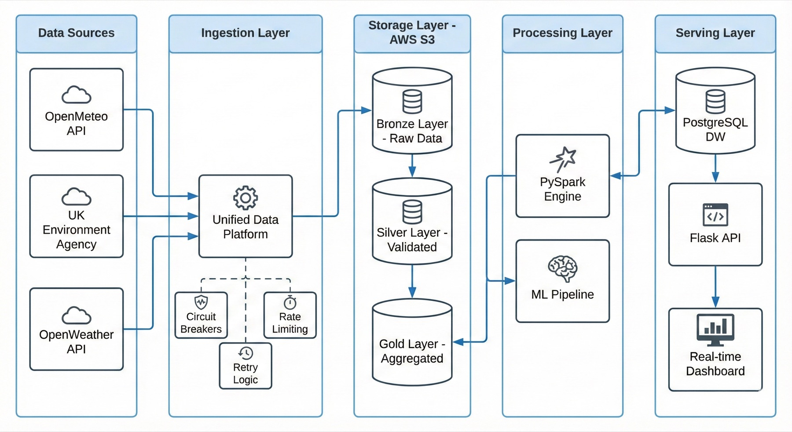
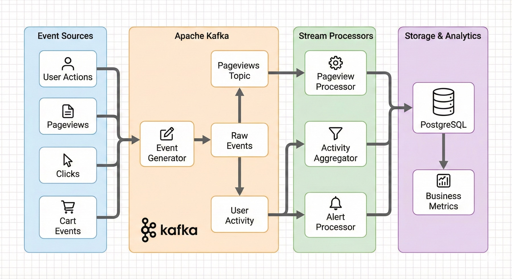
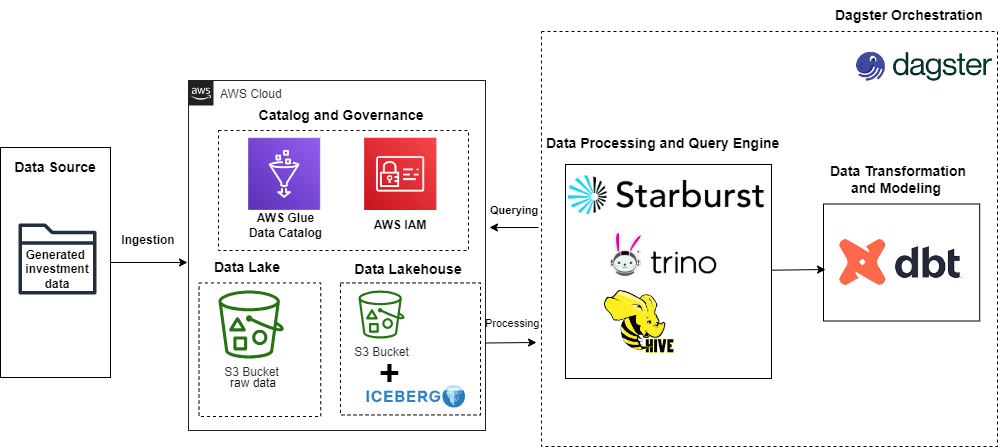
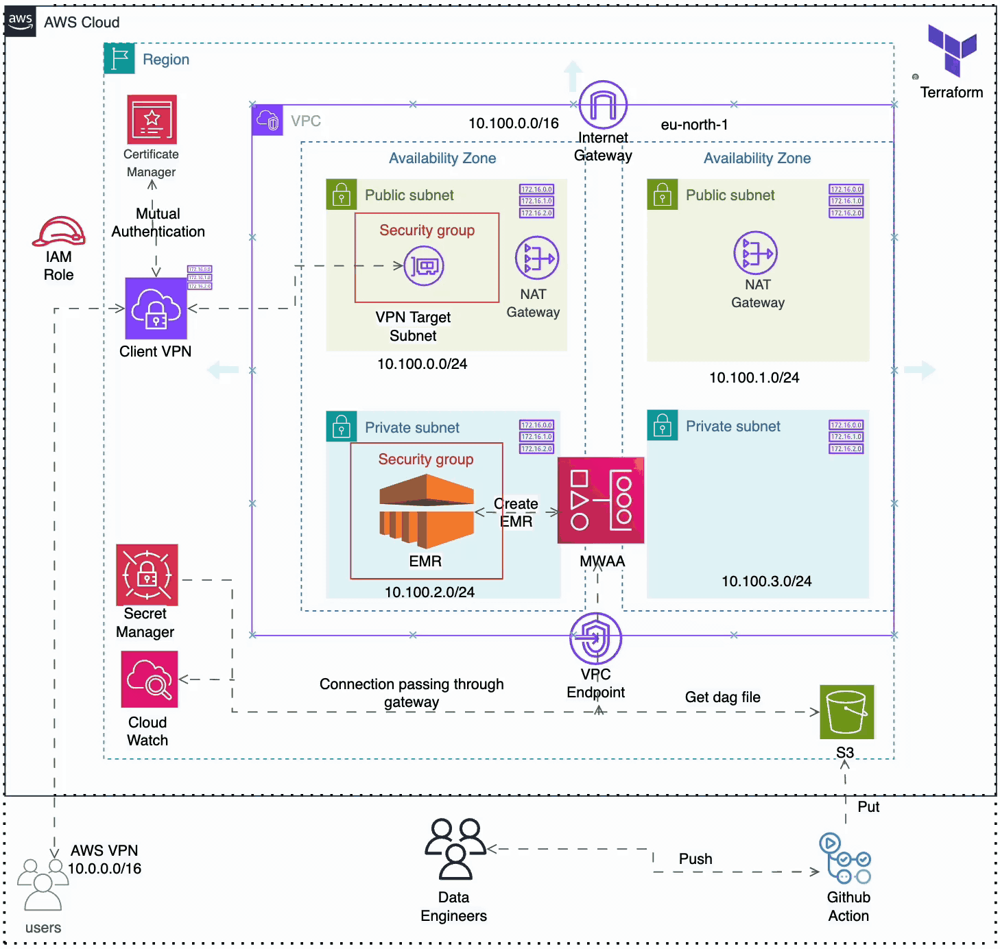
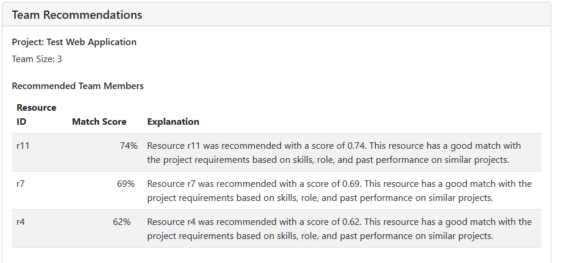

Work, with receipts.
Client work told without client names, and independent projects on public or synthetic data, each one code you can run. Filter by the kind of problem.
$2.97M of revenue credited to the wrong place
Traced through four pipeline layers to one silent join fallback. Unattributed revenue fell from 24% to 2.8%.
A subsidiary counted twice, four quarters running
Up to $99.6bn in one report, invisible to a quarter-on-quarter check.
Who’s burning the Snowflake bill?
80% of credits (3,285 of 4,103) were idle warehouse time. Query-level costs reconcile to the bill to 1e-6.
What did the teacher actually see?
The model keeps the 57 of 1,500 restated term-end scores apart from what teachers saw at the time.
Who owns whom: the global entity register contradicts itself
1,477 subsidiaries name an ultimate parent their own ownership chain contradicts.
QA for AI training data: rules, planted defects and an LLM judge
12 rule checks, a planted-defect benchmark and LLM-as-a-Judge for what rules cannot see.
A governed claims platform from messy hospital files
18 dbt models, 49 data tests, pseudonymised marts and governance rules checked on every build.
Payments change data capture that keeps every state
Replay-safe streaming that flags illegal transitions and reconciles on money every day.
TrueSet: write a check once, run it anywhere
My data quality library: the same check on pandas, DuckDB or a warehouse.
pitlake: numbers that change after the fact, explained
212 changes explained; 52 filing errors held for review.

Smart water management
174,000+ sensor readings from three public APIs through a validated bronze, silver and gold pipeline, scoring 94.9% on its own quality checks.

Real-time e-commerce analytics
Multi-topic Kafka streaming for page views, carts and conversions, designed for 10,000+ events a second, with business alerting.

Modern data lakehouse
Apache Iceberg tables on S3 with ACID guarantees, dbt dimensional models, Trino queries and Dagster orchestration with lineage.

Big data processing platform
Spark on EMR with spot-instance clusters, managed Airflow and a multi-AZ network, all in Terraform with CI.

AI resource recommendation engine
Collaborative and content-based filtering with constraint optimisation to recommend project teams within budget and role limits.
IPL match prediction
Real ball-by-ball data engineered into 44+ match features; Random Forest, XGBoost and logistic regression compared with cross-validation.